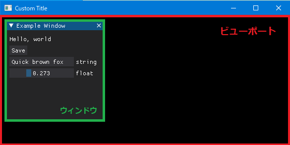
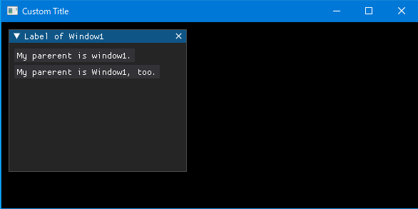

Dear PyGuiは、Python用のGUIツールキットです。簡単なだけでなく、かなり複雑なGUIの作成も可能です。
C++用のGUIライブラリ「ImGui」で構築されています。ゲームやリアルタイム3Dなどへの利用を想定していて、高速性もありそうです。
インストールは、以下で簡単に出来てしまいます。ただし、Python3.6（64ビット）以上が必要です。
> pip install dearpygui以下の例では、「WinPython-3.8.9.amd64」のIDLEを使っています。
ビューポートとアイテム
以下のサンプルコードはDearPyGuiのドキュメントからの引用です。
# サンプルスクリプト1
import dearpygui.dearpygui as dpg
dpg.create_context()
dpg.create_viewport(title='Custom Title', width=600, height=300)
with dpg.window(label="Example Window", pos=(10, 10), width=200, height=200):
dpg.add_text("Hello, world")
dpg.add_button(label="Save")
dpg.add_input_text(label="string", default_value="Quick brown fox")
dpg.add_slider_float(label="float", default_value=0.273, max_value=1)
dpg.setup_dearpygui()
dpg.show_viewport()
dpg.start_dearpygui()
dpg.destroy_context()実行すると以下のGUIアプリケーションが表示されます。

すべてのDPG（Dear PyGui）アプリは、以下を実行する必要があります。
- コンテキストの作成
create_context()- これが一番最初でないと、DearPyGuiは起動しません。
- ビューポートの作成から表示
- ビューポートの作成
create_viewport() - ビューポートの割り当て
setup_dearpygui() - ビューポートの表示
show_viewport()
- ビューポートの作成
- レンダリングの開始
start_dearpygui() - コンテキストの破棄
destroy_context()
Dear PyGuiでは、一番外側のウィンドウを「ビューポート（赤枠）」、その中で作成されたものはすべて「アイテム」と呼ばれます。緑枠のウィンドウや、ウィンドウの中に作成されたボタンやテキストなども「アイテム」と呼ばれます。
属するコンテナー
ウィンドウは子アイテムを持ことができるコンテナータイプと呼ばれるアイテムです。ボタンやテキストなどはコンテナータイプのアイテムに追加されます。
下のサンプルスクリプト2のwith dpg.window(・・・):内で作成されたアイテムは、自動的にそのウィンドウに属することになります。
with dpg.window(・・・):内で作成されなくても、オプション（, parent=～）で属するコンテナーを指定することが可能です。
ちなみに、button1 = dpg.add_button()の場合は、「button1」がアイテムの変数名になります。with dpg.window() as window1;の場合は、as以降の「winodw1」がアイテムの変数名になります。
# サンプルスクリプト2
import dearpygui.dearpygui as dpg
dpg.create_context()
dpg.create_viewport(title='Custom Title', width=600, height=300)
with dpg.window(label="Label of Window1", pos=(10, 10), width=250, height=200) as window1:
button1 = dpg.add_button(label="My parerent is window1.")
button2 = dpg.add_button(label="My parerent is Window1, too.", parent=window1)
dpg.setup_dearpygui()
dpg.show_viewport()
dpg.start_dearpygui()
dpg.destroy_context()実行すると以下のGUIアプリケーションが表示されます。

タグシステム
すべてのアイテムにはユニークなIDが関連付けられている必要があります。
通常、アイテムが作成されるとIDが自動的に生成されます。後で操作する場合は、このIDを明示的に設定することで操作することができます。ユニークなIDでない場合はエラーが発生します。
サンプルスクリプト2をタグを使った記述に書き直してみます。
# サンプルスクリプト3
import dearpygui.dearpygui as dpg
dpg.create_context()
dpg.create_viewport(title='Custom Title', width=600, height=300)
with dpg.window(label="Label of Window1", pos=(10, 10), width=250, height=200, tag="window1"):
button1 = dpg.add_button(label="My parerent is window1.", tag="button1")
dpg.add_button(label="My parerent is Window1, too.", parent="window1", tag="button1")
dpg.setup_dearpygui()
dpg.show_viewport()
dpg.start_dearpygui()
dpg.destroy_context()サンプルスクリプト3を実行すると、ユニークなIDではないので最初エラーが発生します。tag="button1をtag="button2などとするとエラーは解消され、2と同じ結果になります。
変数名を使わずに、タグを使う事でDear PyGui独自の使い方が可能になります。